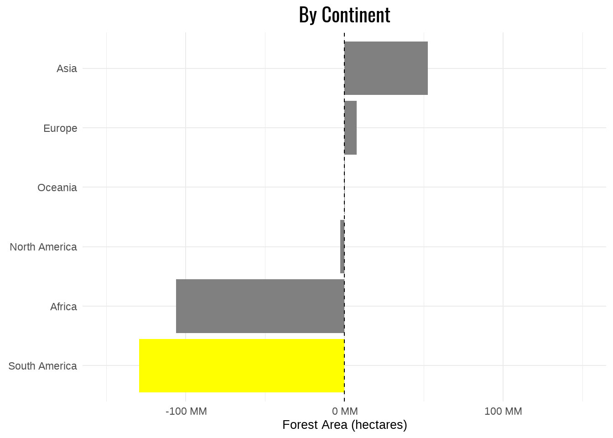
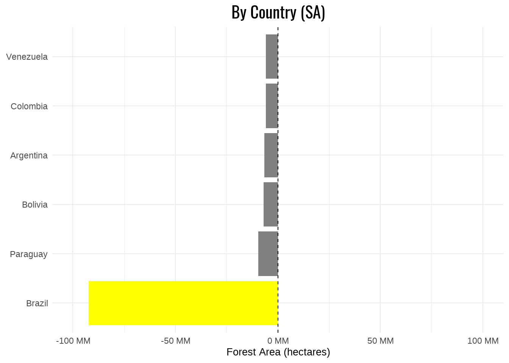
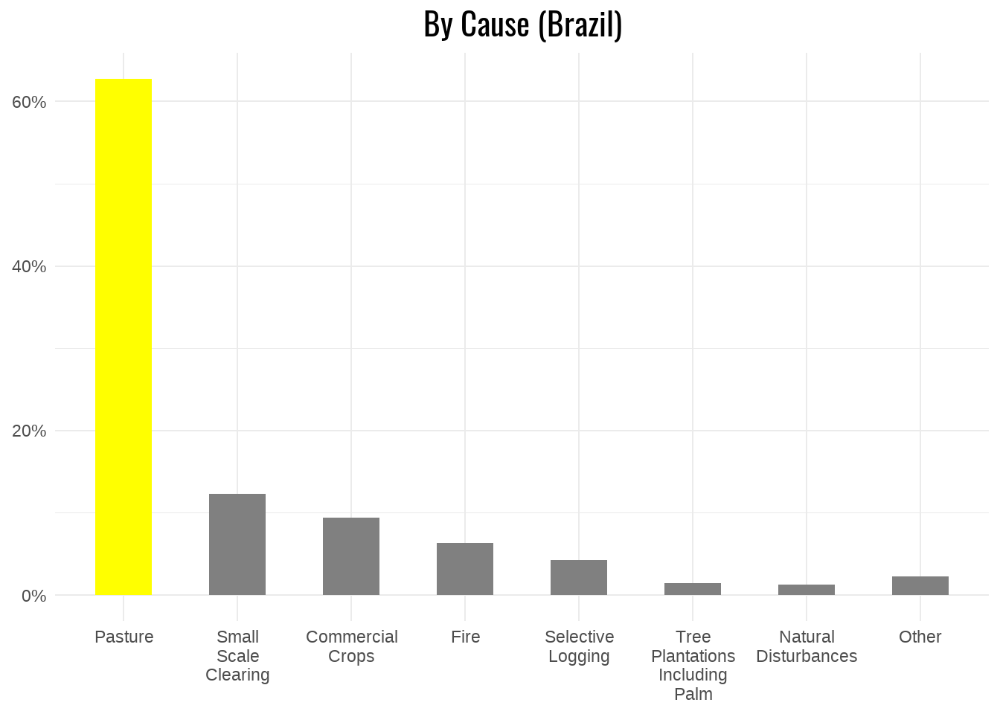
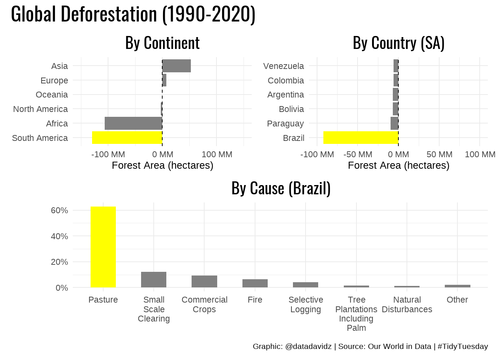

Posted on April 6, 2021
A quick analysis of the weekly #TidyTuesday dataset organized by the R4DS Online Learning Community. My approach is to apply my data science skills to explore one question I have about the data and generate a visualization that addresses this question. The main purpose for me is to practice and try out new things. I am never completely satisfied with the end result but I do the best I can in a short period of time.
What I learned this week about R and the Tidyverse
label_number function from the scales packageBrief explanation of the dataset
For this #TidyTuesday, R4DS provided five datasets with two about forest area change by country, one about specific causes of forest loss in Brazil, one about soybean production and one about vegetable oil production. I was interested in the forest change by year and country but neither dataset gave me exacttly what I was looking for. I went back to the source from OurWorldInData to get the complete dataset by year and country. I then drilled down on by continent and by country. Finally, I analyzed the causes for deforestation in Brazil.
Initial conclusions from exploring the forest_area_km dataset:
Summarize the forest area change between 1990 and 2020 for each of the continents. As mentioned above, three entities need to be recoded for North America.
continents_plus <- c("Africa", "Asia", "Europe", "Northern America", "South America", "Oceania", "Central America", "Caribbean")
forest_continent <- forest_area_km %>%
filter(entity %in% continents_plus) %>%
mutate(entity = case_when(entity == "Northern America" ~ "North America",
entity == "Central America" ~ "North America",
entity == "Caribbean" ~ "North America",
TRUE ~ entity)) %>%
group_by(entity, year) %>%
summarize(forest_area = sum(forest_area), .groups = "drop")
forest_change <- forest_continent %>%
filter(year == 1990 | year == 2020) %>%
pivot_wider(names_from = year, names_prefix = "forest_area_", values_from = forest_area ) %>%
mutate(forest_change = forest_area_2020 - forest_area_1990)First, let’s look at which continents are seeing the largest changes in forest area. A custom color palette is used to highlight the biggest contributor to deforestation: South America.
single_highlight_pal <- c("Asia" = "#808080", "Europe" = "#808080", "North America" = "#808080",
"Oceania" = "#808080", "Africa" = "#808080", "South America" = "#FFFF00")
p1 <- forest_change %>%
mutate(entity = fct_reorder(entity, forest_change)) %>%
ggplot(aes(x = forest_change, y = entity, fill = entity)) +
geom_col() +
geom_vline(xintercept = 0, lty = 2) +
scale_x_continuous(labels = scales::label_number(scale = 1/1e6, suffix = " MM")) +
scale_fill_manual(values = single_highlight_pal) +
expand_limits(x = c(-150e6, 150e6)) +
labs(title = "By Continent",
x = "Forest Area (hectares)",
y = NULL) +
theme(legend.position = "none",
plot.title = element_text(family = "Oswald", size = 16, hjust = 0.5),
axis.title.x = element_text(size = 10))
p1
In the above figure, we see that South America has seen the biggest impact of deforestation with Africa being a relatively close second. I decided to drill down further on the impact on countries making up South America.
sa_countries <- c("Argentina", "Bolivia", "Brazil", "Chile", "Colombia", "Ecuador", "Falkland Islands", "French Guyana",
"Guyana", "Paraguay", "Peru", "Suriname", "Uruguay", "Venezuela")
forest_change_sa <- forest_area_km %>%
filter(entity %in% sa_countries) %>%
filter(year == 1990 | year == 2020) %>%
pivot_wider(names_from = year, names_prefix = "forest_area_", values_from = forest_area ) %>%
mutate(forest_change = forest_area_2020 - forest_area_1990)
sa_highlight_pal <- c("Venezuela" = "#808080", "Colombia" = "#808080", "Argentina" = "#808080",
"Bolivia" = "#808080", "Paraguay" = "#808080", "Brazil" = "#FFFF00")
p2 <- forest_change_sa %>%
mutate(entity = fct_lump(entity, n = 6, w = abs(forest_change)),
entity = fct_reorder(entity, forest_change)) %>%
filter(entity != "Other") %>%
ggplot(aes(x = forest_change, y = entity, fill = entity)) +
geom_col() +
geom_vline(xintercept = 0, lty = 2) +
scale_x_continuous(labels = scales::label_number(scale = 1/1e6, suffix = " MM")) +
scale_fill_manual(values = sa_highlight_pal) +
expand_limits(x = c(-100e6, 100e6)) +
labs(title = "By Country (SA)",
x = "Forest Area (hectares)",
y = NULL) +
theme(legend.position = "none",
plot.title = element_text(family = "Oswald", size = 16, hjust = 0.5),
axis.title.x = element_text(size = 10))
p2
Brazil was, by far, the biggest contributor to deforestation in South America compared to the other countries. I suppose this result is not surprising given all of the media attention on loss of the Amazon rainforest. The next analysis looked at different causes of deforestation in Brazil.
brazil_cause <- brazil_loss %>%
pivot_longer(cols = commercial_crops:small_scale_clearing, names_to = "cause", values_to = "forest_area") %>%
group_by(cause) %>%
summarize(forest_area = sum(forest_area), .groups = "drop") %>%
mutate(total_forest = sum(forest_area)) %>%
mutate(prop = forest_area / total_forest)
brazil_highlight_pal <- c("pasture" = "#FFFF00", "small_scale_clearing" = "#808080", "commercial_crops" = "#808080",
"fire" = "#808080", "selective_logging" = "#808080", "tree_plantations_including_palm" = "#808080",
"natural_disturbances" = "#808080", "Other" = "#808080")
p3 <- brazil_cause %>%
mutate(cause = fct_lump(cause, n = 7, w = prop),
cause = fct_reorder(cause, prop, .desc = TRUE)) %>%
ggplot(aes(x = cause, y = prop, fill = cause)) +
geom_bar(stat = "identity", width = 0.5) +
scale_y_continuous(labels = scales::percent_format()) +
scale_x_discrete(labels = function(x) str_wrap(
str_to_title(
str_replace_all(x, "_", " ")
),10)
) +
scale_fill_manual(values = brazil_highlight_pal) +
labs(title = "By Cause (Brazil)",
x = NULL,
y = NULL) +
theme(legend.position = "none",
plot.title = element_text(family = "Oswald", size = 16, hjust = 0.5)
)
p3
The main cause of deforestation in Brazil was found to be clearing land to create pasture for livestock grazing. Finally, we combine all three plots into a single visualization using patchwork.
(p1 + p2) / p3 +
plot_annotation(title = "Global Deforestation (1990-2020)",
caption = "Graphic: @datadavidz | Source: Our World in Data | #TidyTuesday",
theme = theme(
plot.title = element_text(family = "Oswald", size = 20),
plot.caption = element_text(size = 8))
)
The main theme of this week’s effort was to play around with highlighting on bar charts to divert the viewer’s attention to certain data points. Overall, I felt it was an effective technique for communicating the main sources of global deforestation.
A work by datadavidz